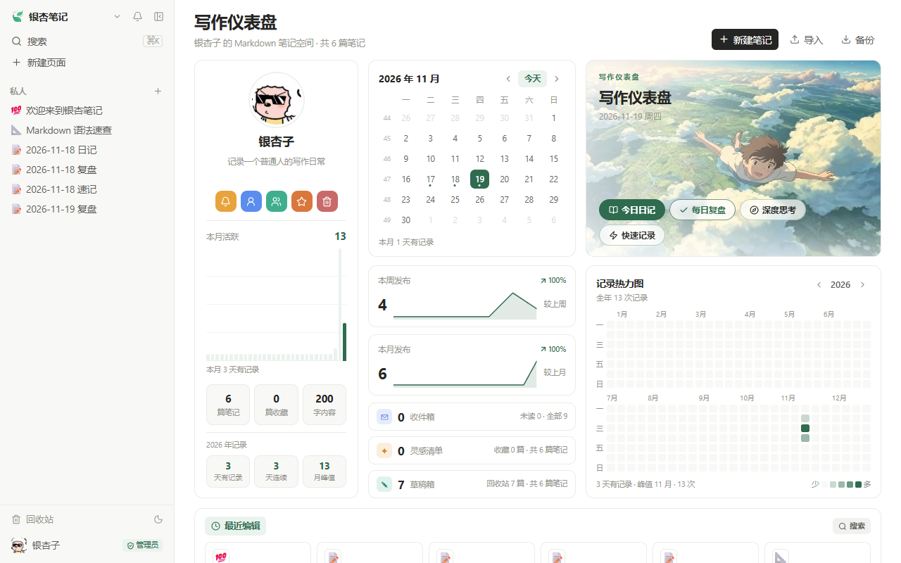

Screenshots
看一眼真实界面
以下截图来自实际运行的实例，未经美化处理。

Markdown 编辑器表格、行内代码、标题渲染，斜杠命令唤出更多块。

团队与组织架构空间隔离、成员管理、组织树权限继承。

好友与分组申请、同意、自定义分组，好友关系单边视图。
写作仪表盘月历、写作统计、热力图与最近编辑，一眼掌握进度。

从一个人写笔记，到一群人协作，功能都在你自己的服务器上。
正文以纯 Markdown 存储，TipTap 只在编辑时存在。GitHub / Obsidian / Typora 直接渲染，不被私有格式锁住。
任务列表、表格、代码高亮、Mermaid 图表、折叠列表；多维表格作为独立实体，可跨页复用与同步。
团队空间、好友关系、组织架构树、成员权限继承。统一 ACL：拒绝优先、资源授权、组织继承、空间基线。
公开链接可设密码与有效期，只读页不加载编辑器；也可把笔记分享给成员，细分查看与编辑权限。
OpenAI 兼容的 AI 助手（SSE 流式）、Webhook（HMAC 签名）、MCP 服务、SMTP 邮件通知与 GitHub OAuth。
简体中文 / 繁體中文 / English 三语界面，亮暗主题，实时在线状态，管理员统计后台。
以下截图来自实际运行的实例，未经美化处理。
需要 Node.js ≥ 22.6 与 pnpm。后端直接用内置 node:sqlite，无需安装数据库。
克隆仓库，装上依赖，复制环境变量模板。
git clone github.com/zcodery/ginkgo-notes
cd ginkgo-notes && pnpm install
cp .env.example .env
首次启动会创建管理员，务必在 .env 里设强密码。
ADMIN_USERNAME=admin
ADMIN_PASSWORD=你的强密码
一条命令同时起前后端，打开 http://localhost:3100。
pnpm dev
生产部署用 pnpm build && pnpm start，由 Express 同时托管前端与 API。详见仓库 README。